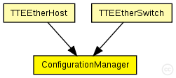
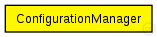

This documentation is released under the Creative Commons license
This documentation is released under the Creative Commons licenseThe BufferManager is responsible for the configuration of a Node (Host or Switch). It creates the necessary Buffer and Incoming modules and connects them.
The BufferManager uses a TTEthernet network configuration (XML-Format) specified in the network_configuration parameter of its parent device and the parent devices device_name
WARNING: The BufferManager requires a certain structure of modules, thus it is currently only applicable for the TTEEtherHost and TTEEtherSwitch
See also: TTEEtherHost, TTEEtherSwitch
Author: Till Steinbach
The following diagram shows usage relationships between types. Unresolved types are missing from the diagram. Click here to see the full picture.
The following diagram shows inheritance relationships for this type. Unresolved types are missing from the diagram. Click here to see the full picture.
| Name | Type | Description |
|---|---|---|
| TTEEtherHost | compound module |
Module for a TTEthernet Host. Contains a EtherLLC for best-effort traffic, a TTEPHYPort module as physical port, sync module (Sync) and a TTEScheduler module. The Host is configured by the provided TTEthernet XML network configuration (network_configuration parameter) and uses the device_name parameter to find its config. The configuration is done by the BufferManager that deletes itself at runtime. |
| TTEEtherSwitch | compound module |
Module for a TTEthernet Switch with variable number of ports. Contains a configurable best-effort implementation (beRelayUnitType like IMACRelayUnit), TTEPHYPort modules for physical ports, sync module (Sync) and a TTEScheduler module. The switch is configured by the provided TTEthernet XML network configuration (network_configuration parameter) and uses the device_name parameter to find its config. The configuration is done by the BufferManager that deletes itself at runtime. |
// The BufferManager is responsible for the configuration of a Node (Host or Switch). // It creates the necessary Buffer and Incoming modules and connects them. // // The BufferManager uses a TTEthernet network configuration (XML-Format) specified in // the network_configuration parameter of its parent device and the parent devices device_name // // @warning The BufferManager requires a certain structure of modules, thus it is // currently only applicable for the TTEEtherHost and TTEEtherSwitch // // @see TTEEtherHost, TTEEtherSwitch // @author Till Steinbach simple ConfigurationManager { }
This documentation is released under the Creative Commons license